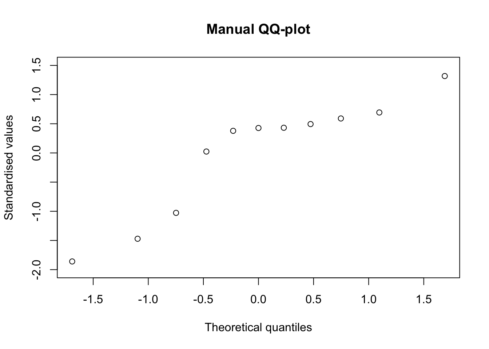

set.seed(1234)
y <- sort( runif(11))
y [1] 0.009495756 0.113703411 0.232550506 0.514251141 0.609274733 0.622299405
[7] 0.623379442 0.640310605 0.666083758 0.693591292 0.860915384This post is ‘only’ for the most curious students…
QQ-plots and Box-Whisker plots usually become part of the statistical toolbox for the students attending my course of ‘Experimental methods in agriculture’. Most of them learn that the QQ-plot can be used to check for the basic assumption of gaussian residuals in linear models and that the Box-Whisker plot can be used to describe the experimental groups, when their size is big enough and we do not want to assume a gaussian distribution. Furthermore, most students learn to use the plot() method on an ‘lm’ object and the boxplot() function in the base ‘graphic’ package and concentrate on the interpretation of the R output. To me, in practical terms, this is enough; however, there is at least a couple of students per year who think that this is not enough and they want to know more. What is the math behind those useful plots? Can we draw them by hand?
If I were to give further detail about these two types of graphs, I should give a more detailed explanation of percentiles, at the very beginning of my course. I usually present the concept, which is rather easy to grasp, for students and I also give an example of how to calculate the 50th percentile (i.e. the median). So far, so good. But, what about the 25th and 75th percentiles, which are needed to build the Box-Whisker plot? As a teacher, I must admit I usually skip this aspect; I resort to showing the use of the quantile() function and the students are happy, apart the same couple per year, who asks: “what is this function doing in the background?”.
Usually, there is no time to satisfy the above thirst for knowledge. First of all, I need time to introduce other important concepts for agricultural student; second, giving more detail would imply a high risk of being ‘beaten’ by all the other, less eager, students. Therefore, I decided to put my explanation here, to the benefit of the most curious of my students.
As an example, we will use 11 observations, randomly selected from a uniform distribution. First of all, we sort them out in increasing order.
set.seed(1234)
y <- sort( runif(11))
y [1] 0.009495756 0.113703411 0.232550506 0.514251141 0.609274733 0.622299405
[7] 0.623379442 0.640310605 0.666083758 0.693591292 0.860915384Let’s try to imagine that our eleven observations are percentiles, although we do not know what their percentage point is. Well, we know something, at least; we have an odd number of observations and we know that the central value (0.622299405) is the median, i.e. the 50th percentile. But, what about the other values? In other words, we are looking for the P-values associated to each observation (probability points).
In order to determine the P-values, we divide the whole scale from 0 to 100% into as many intervals as there are values in our sample, that is eleven intervals. Each interval contains \(1 / 11 \times 100 = 9.09\%\) of the whole scale: the first interval goes from 0% to 9.09%, the second goes from 9.09% to 18.18% and so on, until the 11th interval, that goes from 90.91% to 100%.
Now, each value in the ordered sample is associated to one probability interval. The problem is: where do we put the value, within each interval? A possible line of attack, that is the default in R with \(n > 10\), is to put the value in the middle of the interval, as shown in the Figure below.

Consequently, each point corresponds to the following P-values:
(1:11 - 0.5)/11 [1] 0.04545455 0.13636364 0.22727273 0.31818182 0.40909091 0.50000000
[7] 0.59090909 0.68181818 0.77272727 0.86363636 0.95454545In general:
\[p_i = \frac{i - 0.5}{n} \]
where \(n\) is the number of values and \(i\) is the index of each value in the sorted vector. In other words, the first value is the 4.5th percentile, the second value is the 13.64th percentile and so on, until the 11th value that is the 95.45th percentile.
Unfortunately, the calculation of P-values is not unique and there are other ways to locate the values within each interval. A second possibility, is to put the value close to the beginning of each interval. In this case, the corresponding P-values can be calculated as:
(1:11 - 1)/(11 - 1) [1] 0.0 0.1 0.2 0.3 0.4 0.5 0.6 0.7 0.8 0.9 1.0In general:
\[p_i = \frac{i - 1}{n - 1} \]
According to this definition, the first value is the 0th percentile, the second is the 10th percentile and so on.
A third possibility, is to put the value at the end of each interval. In this case, each point corresponds to the following P-values:
1:11/11 [1] 0.09090909 0.18181818 0.27272727 0.36363636 0.45454545 0.54545455
[7] 0.63636364 0.72727273 0.81818182 0.90909091 1.00000000In general, it is:
\[p_i = \frac{i}{n} \]
Although it is not the default in R, this third approach is, perhaps, the most understandable, as it is more closely related to the definition of percentiles. It is clear that there is 9.09% subjects equal to or lower than the first one and that there is 18.18% of subjects equal to or lower than the second one.
Several other possibilities exist, but we will not explore them here. However, the most common function in R to calculate probability points is the ppoints() function, which gives different results, according to the selection of the ‘a’ argument. In detail, if \(a = 0.5\) (the default) we obtain the first series of P-values (where each of the original values is put in the middle of each interval) while, if \(a = 1\), we obtain the second series of P-values (where each of the original values is put near to the beginning of each interval).
ppoints(y) [1] 0.04545455 0.13636364 0.22727273 0.31818182 0.40909091 0.50000000
[7] 0.59090909 0.68181818 0.77272727 0.86363636 0.95454545ppoints(y, a = 1) [1] 0.0 0.1 0.2 0.3 0.4 0.5 0.6 0.7 0.8 0.9 1.0ppoints() to the QQ-plotP-values are used to draw quantile-quantile plots. Let’s imagine that we want to know whether the eleven values in the vector ‘y’ can be regarded as a sample from a gaussian distribution. To this aim, we can standardise them and plot them against the corresponding percentiles of a gaussian distribution, which we derive from the above determined P-values, by the pnorm() function. The output is exactly the same as that produced by a call to the qqnorm() function.
x.coord <- qnorm(ppoints(y))
y.coord <- scale(y, scale = T)
plot(y.coord ~ x.coord, main = "Manual QQ-plot",
xlab = "Theoretical quantiles", ylab = "Standardised values",
ylim = c(-2, 1.5))
Percentiles can be calculated by solving the three equations above for \(i\). For example, from the first equation, with simple math, we derive:
\[i = n p_i + 0.5\]
which gives the index for the required percentile. If we look for the 30th percentile, the index is \(11 \times 0.30 + 0.5 = 3.8\), i.e. this percentile is between the 3rd and the 4th value, that are, respectively, 0.232550506 and 0.514251141. We can find the exact percentile by a sort of ‘weighted average’ of these two values, considering the decimal part of the index (0.8):
(1 - 0.8) * y[3] + 0.8 * y[4][1] 0.457911We can get the same result, by using the quantile() function in R and setting the ‘type = 5’ argument.
quantile(y, 0.3, type = 5) 30%
0.457911 If we start from the second equation, we derive:
\[i = p \times (n - 1) + 1\]
For the 30th percentile, the index is \(0.3 \times (11 - 1) + 1 = 4\). Thus, the required percentile is exactly in 4th position (0.5142511). With R, we can use the same quantile() function, but we have to set the ‘type = 7’ argument, that is the default.
quantile(y, 0.3) 30%
0.5142511 If we take the third equation above, we derive:
\[i = n \times p\]
and thus the index for the 30th percentile is: \(11 \times 0.3 = 3.3\). We use the same kind of ‘weighted average’ to retrieve the exact percentile:
(1 - 0.3) * y[3] + 0.3 * y[4][1] 0.3170607With R:
quantile(y, 0.3, type = 4) 30%
0.3170607 If we use the above math to derive the 25th, the 50th and the 75th percentile, we are ready to draw our boxplot by hand. Please, consider that the boxplot() function in R uses the default quantiles (‘type = 7’).
It’s all, for today. Happy work with these functions! And … don’t forget to check out my new book!
Prof. Andrea Onofri
Department of Agricultural, Food and Environmental Sciences
University of Perugia (Italy)
Send comments to: andrea.onofri@unipg.it